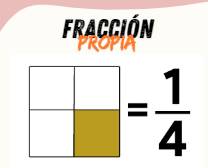
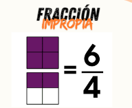
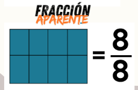

Clasificación de fracciones

Definiciones

Una fracción propia es aquella cuyo numerador es menor que el denominador. Representa menos de un entero

Una fracción impropia es aquella cuyo numerador es mmayor que el denominador. Representa más de un entero

Una fracción aparente se da cuando el cociente entre el numerador y el denominador es un número entero.
En este caso el numerador es múltiplo del denominador.

Una fracción mixta es aquella que está formada por una parte entera y una fraccionaria.